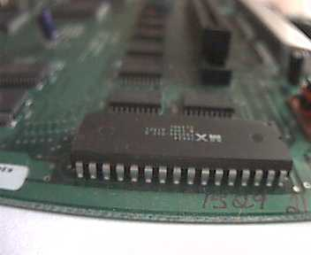
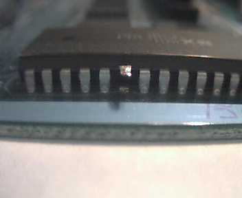
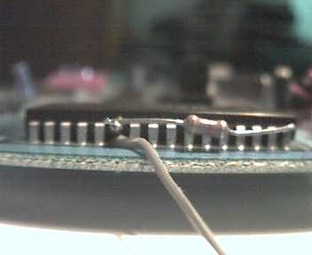
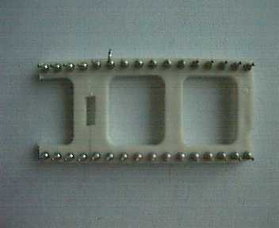
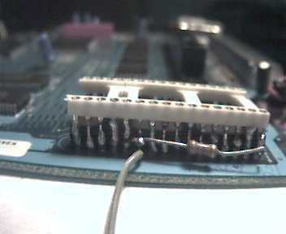
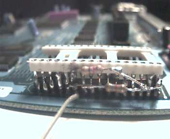
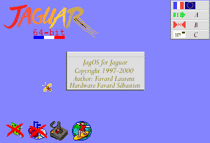
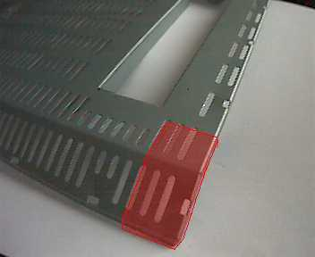
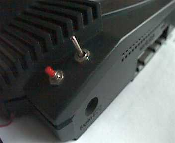
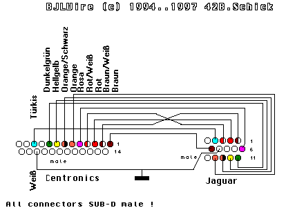

How to install the Jaguar
Kit
Updated/Mise à jour , May 25, 2000
Introduction
This description is the same for BJL kit. So if
you have already installed this one, you just need to change
the BJL Eprom to our JagOS Eprom, and look if
you are happy with it. BJL is the kit of Bastian
Shick.
Bastian Schick http://rgpc72.gp.fht-esslingen.de/students/elw5basc/
Cette description est la même que pour l'installation
du Kit BJL. Si vous avez déjà installlè ce kit, vous
pouvez alors simplement remplacer l'Eprom par
celle de JagOS, et regarder si cela vous plait.
Copyright
All pictures of Jaguar are property of Mattias
Domin, Matthias.Domin@t-online.de,
which allow me to use
them on this page. Thank you again Mattias !
Atari Lynx page: http://home.t-online.de/home/Matthias.Domin/lynx_eng.htm
Atari Jaguar page: http://home.t-online.de/home/Matthias.Domin/jag_eng.htm
First part: JagOS Eprom installation
This is on your own risk ! Don't blame me if anything goes wrong!
If you're not experienced in soldering, stop here!
You need:
-
an EPROM type 27c010 or 27c1001 (this is 128K x 8) / Une Eprom de 64 Ko
minium ou 128 Ko
-
a 32 pin DIL socket/ Un support DIL ou tulipes 32 broches
-
a switch with 2 positions ( 3 contacts, 1 common and 2 others )/ Un interrupteur
(commutateur) a deux positions (Un commun et 2 autres)
-
two 4k7 resistors 1/4W/ Deux résistances 1/4 watts de 4700
Ohms
-
some wire/Un peu de fils pour réaliser des connexions.
1)
Open your Jaguar console and remove the shield. Localize the Boot-ROM,
it's near the power-plugin:
Ouvrez la console Jaguar , enlever le blindage metallique puis localisez
l'emplacement de la ROM, proche
du connecteur d'limentation.

2)
Cut /CE (pin 22) as close as possible to the PCB and bend it up:
Coupez soignement la broche du CI 22 (Signal /CE) , pres du circuit
imprimé et relever la patte vers le CI.

3)
Solder a resistor at this pin and at pin 32 (Vcc), this pulls /CE up:
Souder une resistance entre la broche 22 du CI et l'alimentation Vcc
en broche 32.

4)
Bend up the socket's pin 22:
Coupez au maximum la patte 22 du support, en laissant le point mettalique
uniquement. Il s'agit d'isoler
cette patte de celle correspondante au CI.

5)
Solder the socket onto the original ROM:
Poser le support sur la ROM Atari, et souder chaque patte sur celle
de la ROM juste en face, sauf la 22
qui est dissociée du support.
Conseils: Pour éviter de chauffer la ROM, souder une broche
puis une autre éloignée de la première et
ainsi de suite. cela évitera de faire chauffer le quasi même
endroit de la ROM.

6)
Solder the second resistor at pin 22 of the socket and at pin 32 of
the ROM:
Souder une nouvelle résistance entre la broche 22 du support
et la broche 32 de la ROM. Ensuite souder
un fils sur le reste de la broche 22 qui est le Circuit Imprimé.
Faite attention a ne pas faire un pont de soudre
avec les deux pattes a coté ou la broche 22 de la ROM.

7)
Solder 3 wires to the switch, the main (which is switched) to the /CE
on the PCB (don't make a short cut !) and the other two either to pin 22
of the ROM and the socket.
Soudez le fils précédent sur la broche centrale
du l'interrupteur à deux positions (commutateur). Ensuite soudez
deux nouveaux fils sur les deux autres broches de l'interrupteur, puis
soudez leur extréminté sur la broche
22 de la ROM pour l'un, la broche 22 du support pour l'autre.
8) Switch you Jaguar ON to test. In one position nothing should happen,
in the other, it should boot normally.
Allumez la Jaguar pour faire un premier test. Dans une position de l'interrupteur
rien ne se passera (Ecran noir),
l'autre position devrait alors la faire démarrer normallement.
Normal boot-screen:
9)
If nothing happens, check all steps and check for short-cuts.
Si rien ne se passe vous avez peut être provioquer un court-circuit.
Vérifier toutes les étapes
pécédentes et si il n'y a pas de pont de soudre entre
des pattes du support ou de la ROM.
10)
Burn the image JagOS.img at the very beginning of the ROM.
Si tout c'est bien passé, faite programmer votre EPROM
avec le fichier JagOS.img (Comme avec BJL),
à partir du tout début de l'Eprom.
11)
Insert your EPROM and switch your Jaguar on.
Insérez l'Eprom JaOS.img dans le support et tourner l'interrupteur
pour le mettre en position ou vous aviez
l'écran noir.
12)
Everything is fine, if this screen appears.
Si tout est correct, vous devriez obtenir l'image suivante...

13)
To be able to fix the switch you have now to cut a rectangle out of
the metall-cage cover near the power plug:
Pour fixer l'interupteur, vous alez avoir besoin de découper
un petit morceau du blindahe afin de libérer un espace.

14)
Now drill a hole for the switch into the console cover near to the
power plug. Here is a picture of a Jaguar with an additional reset key
(the red one):
Mainteant percez la boitier afin de fixer l'interrupteur comme sur
l'image. On peut voir à coté, un poussoir RESET
supplémentaire...Bien utile !

15)
Prepare the cable and enjoy hacking the Jaguar. Here's a diagram of
the cable connections (looking at the
soldering side):
Préparez pour finir le cable de connection, comme sur le schéma
indiqué. Les vues sont coté soudre.
Il s'agit du même cable que pour le Kit BJL.

THAT'S ALL
C'EST TOUT
First part: Reset button installation
This modification can be VERY usefull for reboot
easily your Jaguar Console, instead of to switch it off and on.
Third part: Display rate 50/60 Hz switch
This modification is REQUIRED to get a correct
dispaly with JagOS. In addition, if you want to play with somes games which
want 60 Hz, like 'Dragon's lair', this button will be very usefull. I extract
this follow from a classic FAQ Jaguar.
"The 50Hz/60Hz frame rate is set by soldering
pads on the bottom of the Jaguar PCB. On an NTSC Jaguar, they're
located on the bottom of
the PCB near the controller ports. The
set labelled "R140" determines between 50Hz and 60Hz. Connect the
two points for 50Hz, or leave
them disconnected for 60Hz, as follows: "
60Hz 50Hz
o--o
R135 o--o
o o
R136 o o
o o
R137 o o
o o
R140 o--o
"PAL Jaguars sold in Europe have the R140 pads
connected with a zero ohm SMD resistor, which can be removed with a soldering
iron. It is
possible to wire a switch to the points, allowing
the Jaguar to be toggled between 50Hz/60Hz. This is mainly useful
for PAL Jaguars to play
games at the original speed and screen resolution
of the NTSC version."
Contact
Please contact us at atari@linux.utc.fr
for more informations. |